信息素路线调度
同兵种多线并行；调度器按路线长度计算目标占比，把下一只蚂蚁派往缺口最大的路线。
Every Grain of Sand Is a Battlefield
从蚁巢绘制信息素路线，调度工蚁、兵蚁、喷射蚁与轰炸蚁，
在采集、护卫与虫潮压力之间建立可持续的蚁群。
路线即命令：长度加权派兵、独立出兵节拍、1–100 优先级与曲线名字。
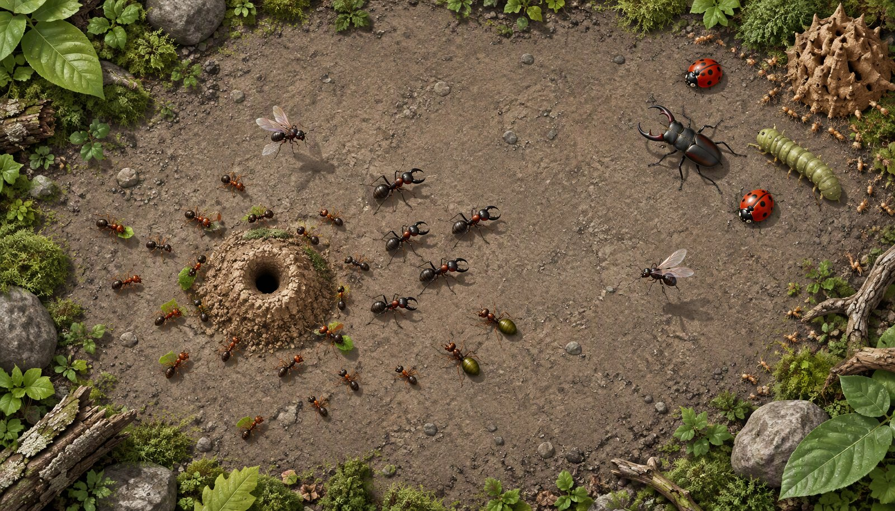
同兵种多线并行；调度器按路线长度计算目标占比，把下一只蚂蚁派往缺口最大的路线。
购买兵力先入巢内库存，确认路线后依次派遣；任务完成回巢返库，循环派遣。
波次按时间与间隔分批生成；近战、远程、分裂、飞行轰炸与首领行为持续施压。
星级结算换取升级：工蚁搬运、兵蚁殉爆、喷射溅射、轰炸地毯式侧投。
购买兵力先入巢内库存；确认信息素路线后兵种锁定，任务完成回巢返库。
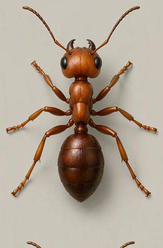
采集与搬运 · 危险时逃离
信息素识别色
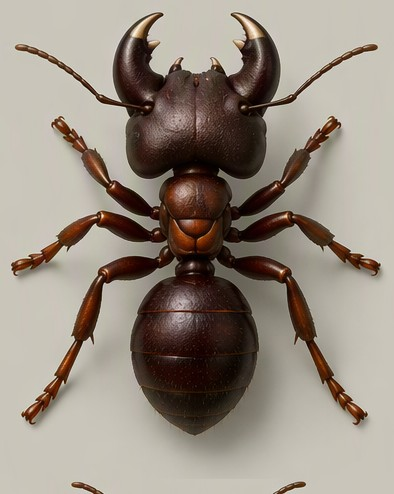
地面近战 · 拦截与护卫
信息素识别色
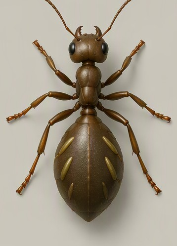
远程酸液 · 减速控制
信息素识别色
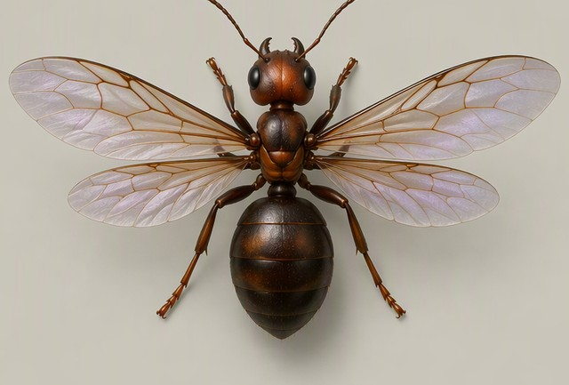
高速空中 · 范围输出
信息素识别色
信息素保留兵种识别色：工蚁青蓝、兵蚁黄、喷射蚁品红、轰炸蚁橙；删除与自交冲突使用危险红，不与兵种色混用。
没有实际服务的入口明确标识筹备中，不制造在线人数、匹配状态或战绩。
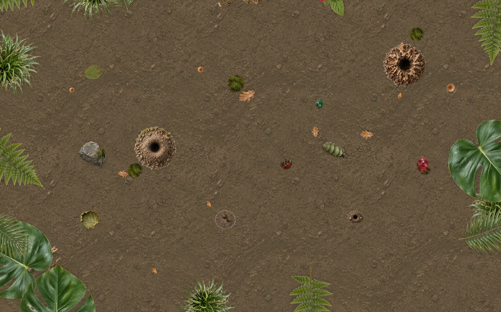
已开放单机战役 36 关与无限模式；领地连接推进，首领关与星级结算。
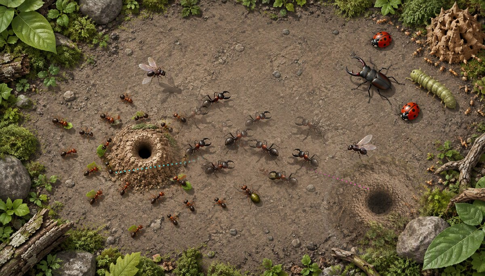
筹备中PVP 对抗：多蚁巢出兵对战，争夺森林地表控制权。
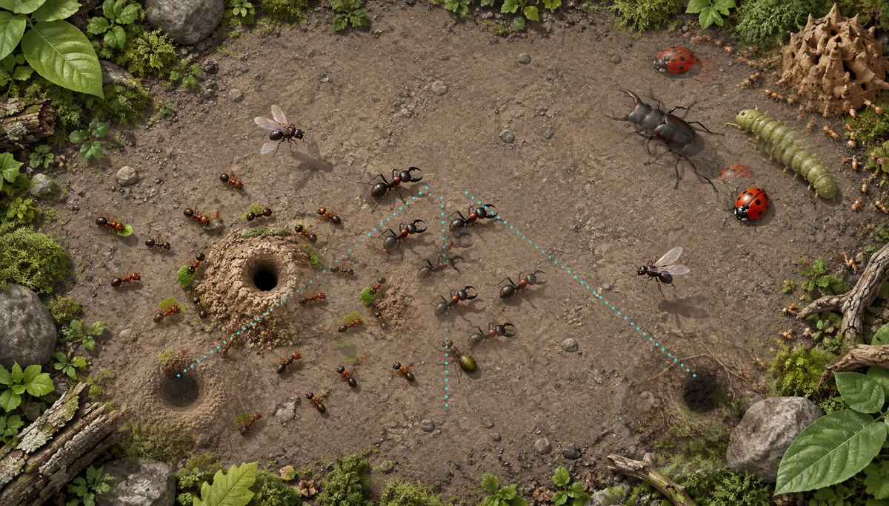
筹备中合作 PVE：多蚁巢兵线汇合，共同抵御入侵虫潮。
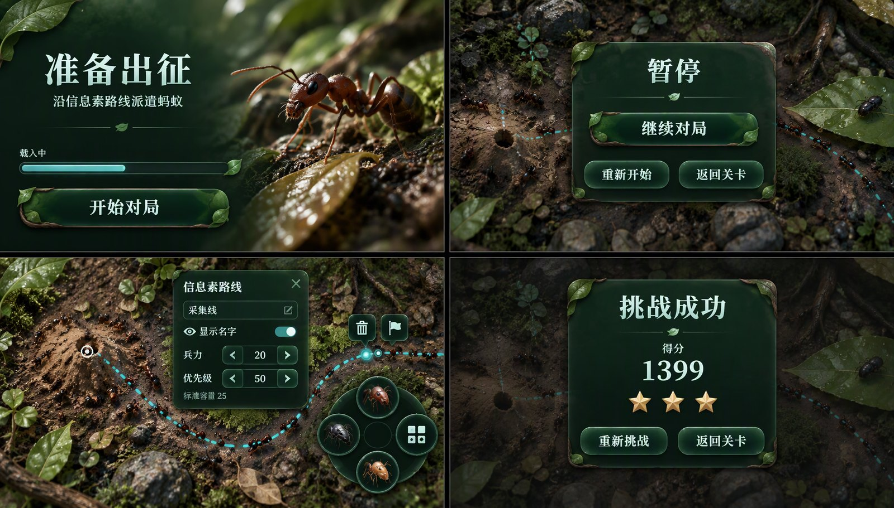
已开放成就、图鉴与统计；订阅语言信号即时重算。
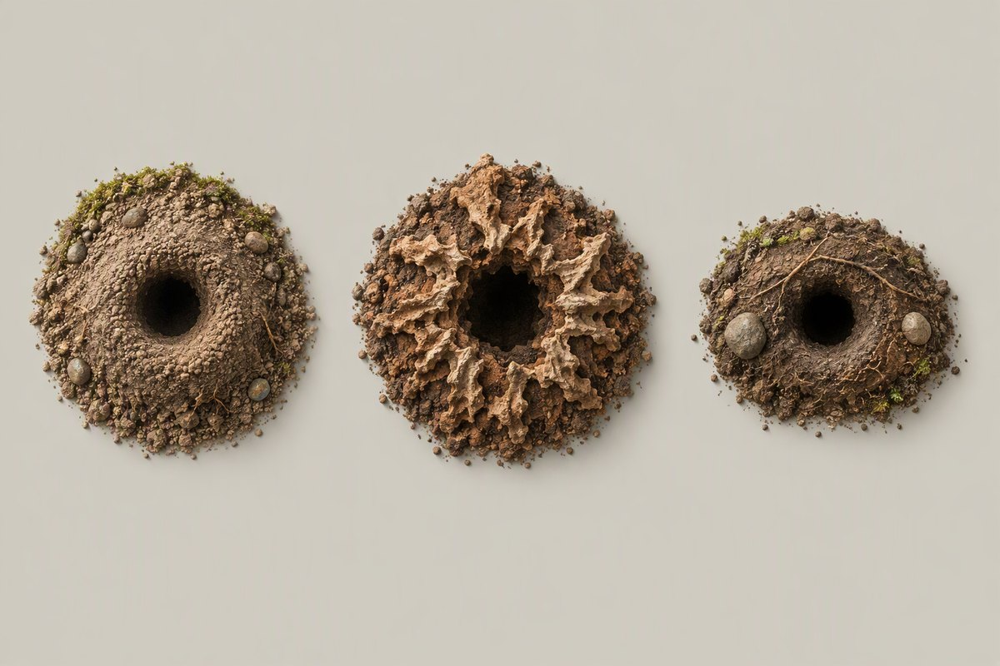
已开放兵种资料与三阶永久升级；12 项对战技能。
已确认制作与待确认原稿分开标注；概念图不冒充实机截图。
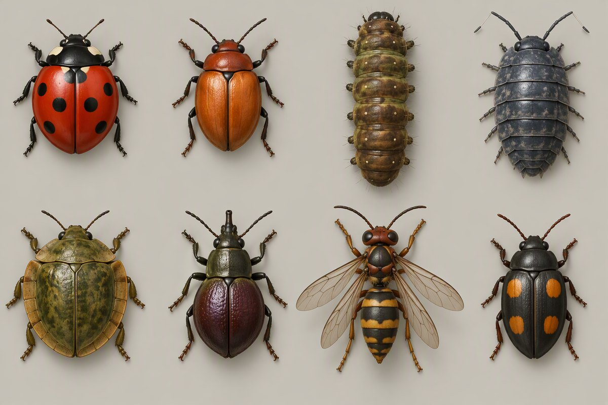
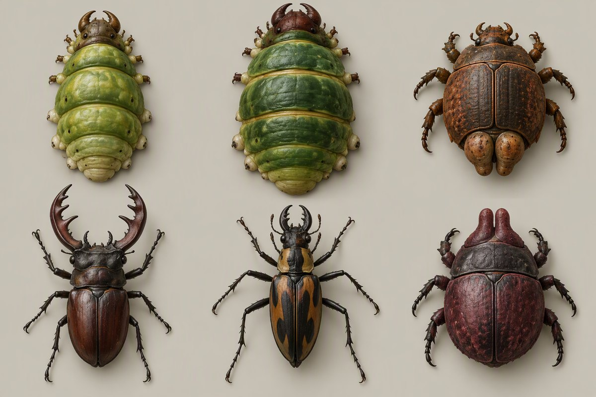
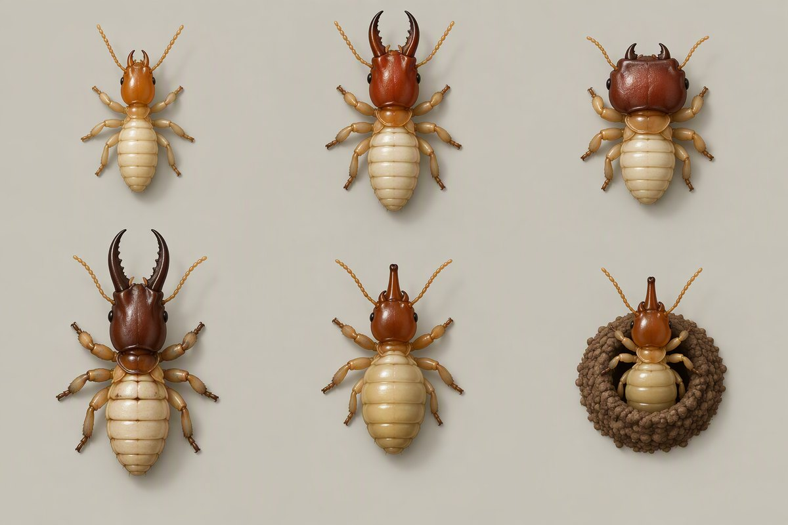
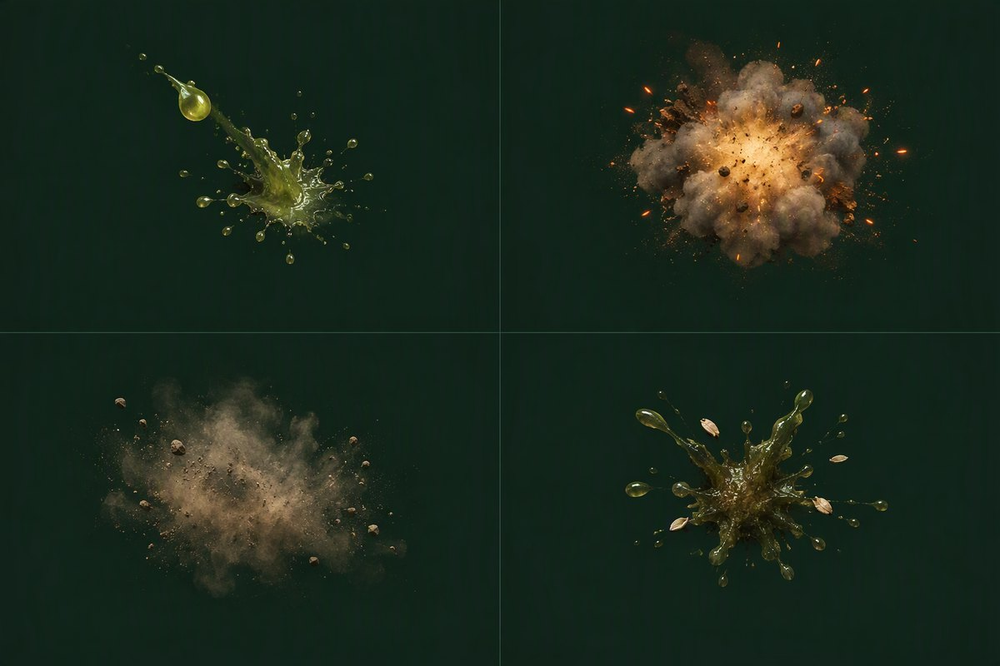
上线计划与开发日志分开记录；未来节点为计划口径，以发布公告为准。
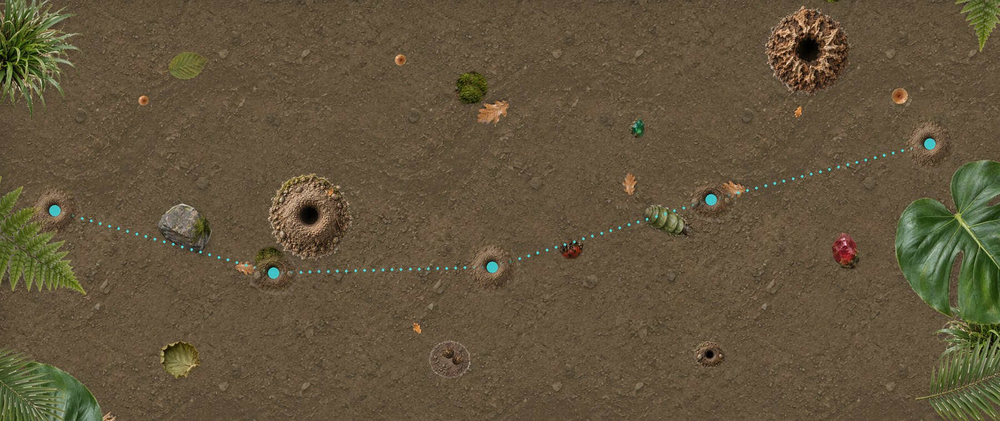
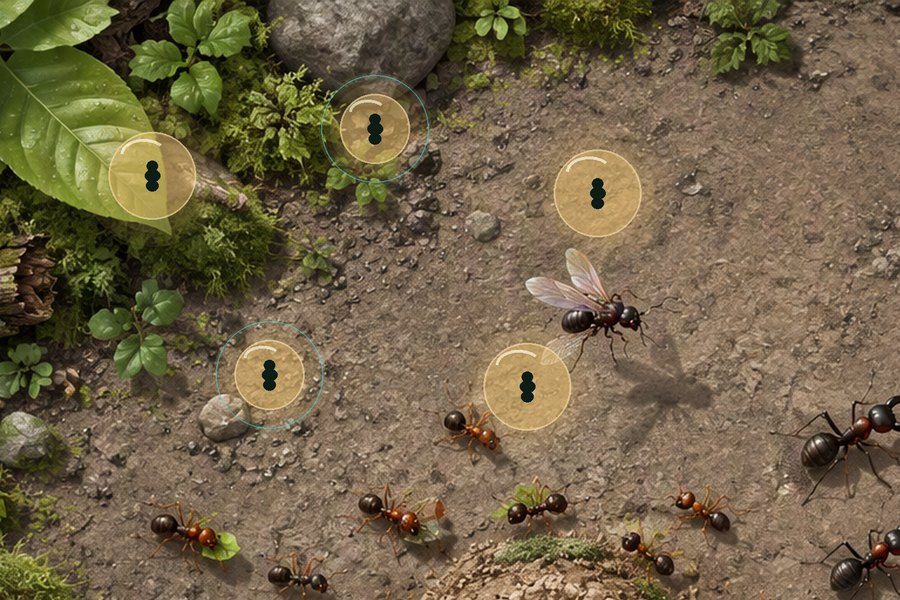
日志取自 CHANGELOG.md；胶囊配图为设计稿合成
横屏游玩 · 单机 / 1v1 联机
官方服务器直链 · 支持断点续传
筹备中 · 下载链接暂未提供
敬请期待双端共用森林 UI 基准，界面按 1024×600 设计坐标等比缩放
Godot 4.6 .NET · GL Compatibility · 基准 1280×720
开发构建：tools 内 build.cmd / run.cmd，见 docs/开发指南
最新直链：downloads/latest.apk
素材与许可见项目 docs/素材与许可.md；字体 Noto Sans CJK SC